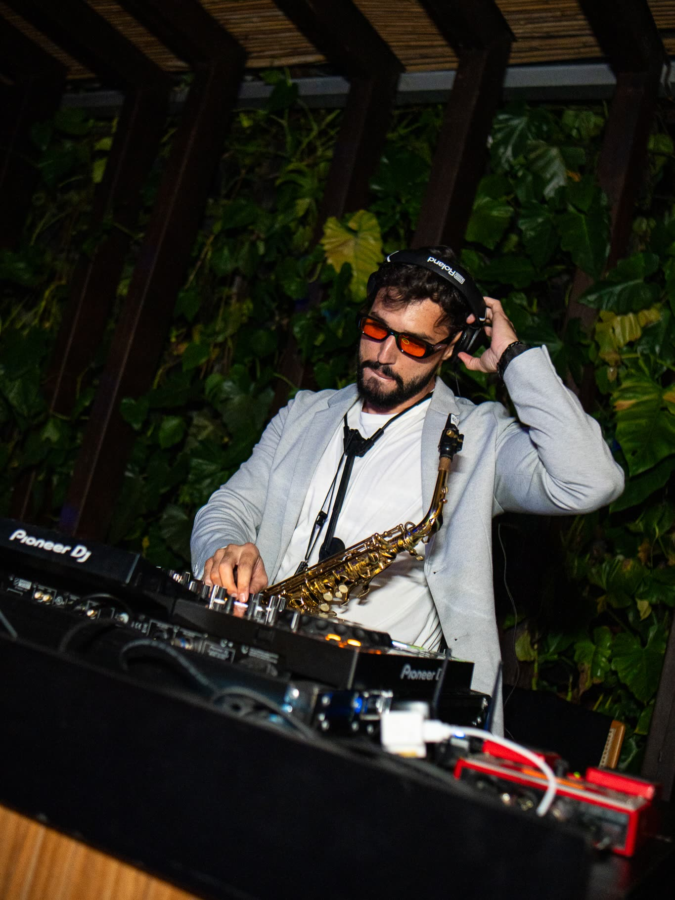
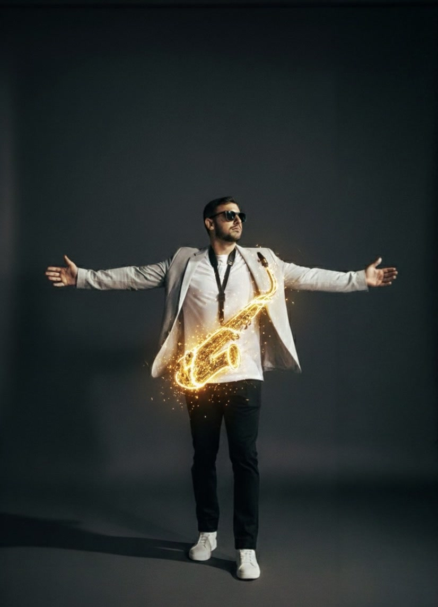
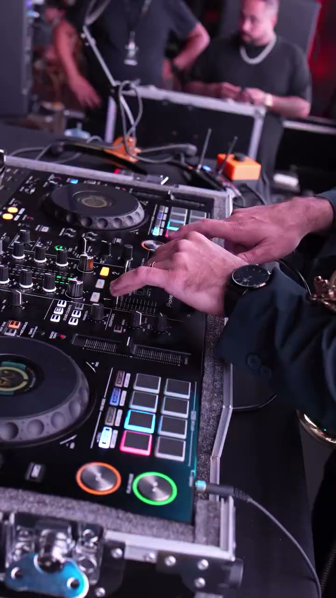
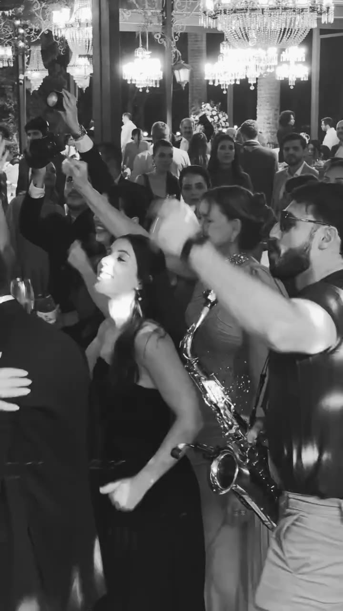
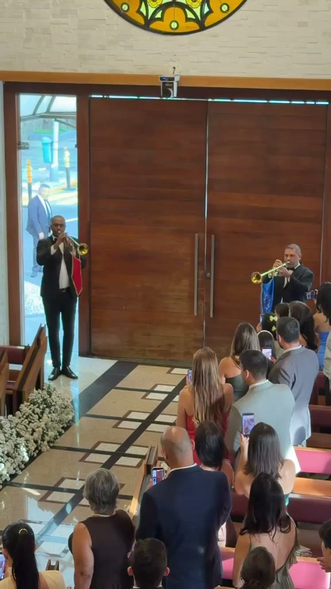
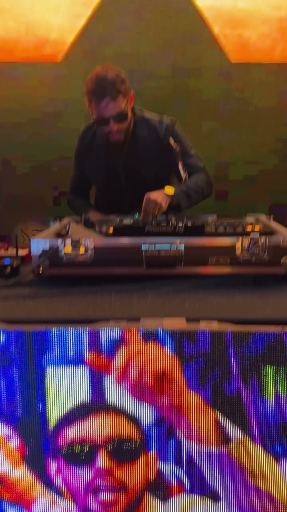
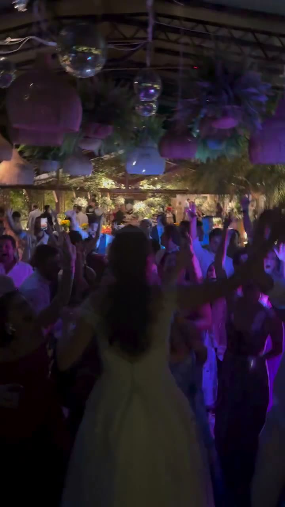
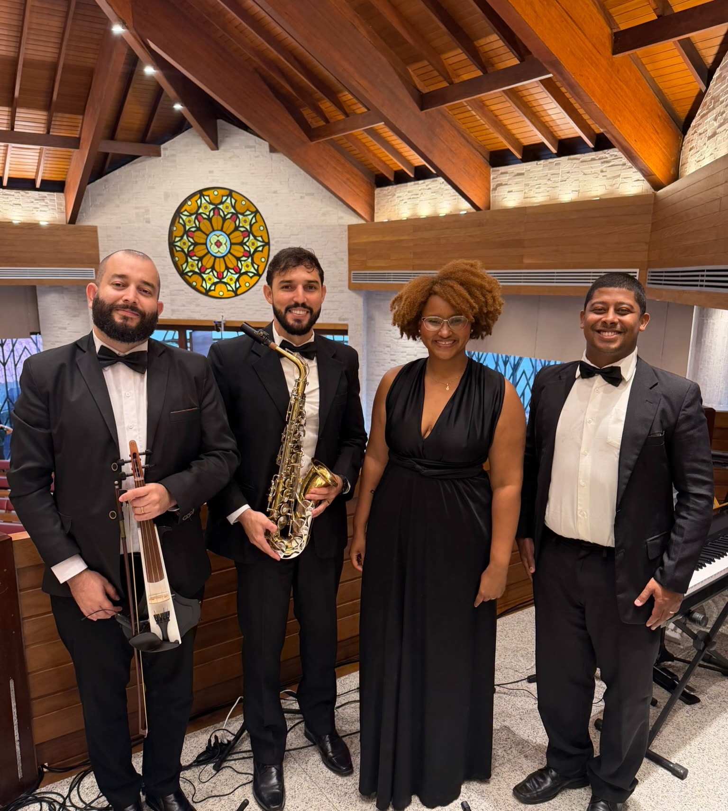
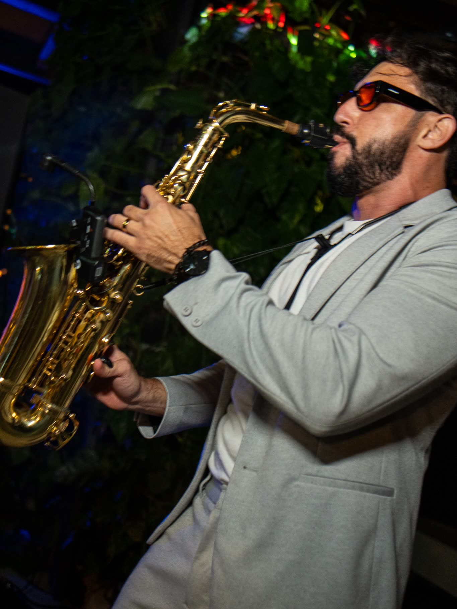
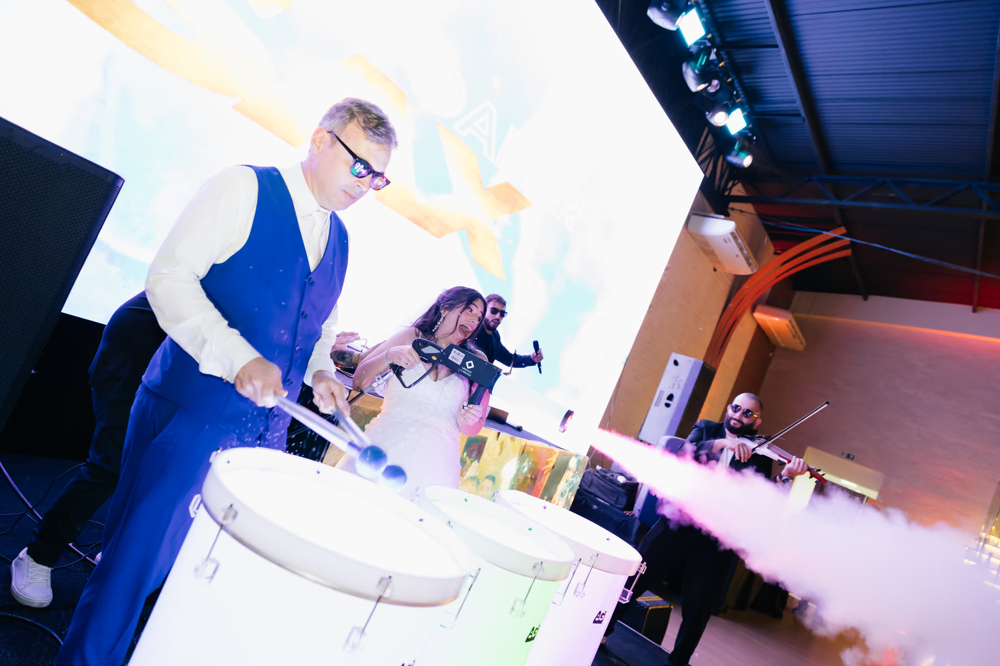

DJ & Live Sax Experience
Para quem tem medo de pista vazia.
Este link não está ativo no momento. Me chama no WhatsApp que eu te envio a proposta atualizada.
Falar com o BrunoProposta exclusiva para
Antes de tudo
— Bruno Daner
Quem conduz a sua festa
Sou Bruno Daner, saxofonista e DJ formado pela Escola de Música Villa-Lobos. Comecei nos palcos do pagode e, há cinco anos, levo para casamentos e eventos a união do sax ao vivo com a condução de um DJ — no Brasil e fora dele.
Já dividi o palco com
Dos palcos do samba e do pagode para mais de 500 apresentações em casamentos, eventos corporativos e celebrações exclusivas.
Destination & internacional
Uma turnê me levou a Nova York e à Flórida — e destination weddings fazem parte do meu trabalho. A experiência vai junto, para onde a celebração for.
Grandes casamentos
Nada aqui é ensaio ou banco de imagem — é o que os seus convidados vão viver. Toque e assista com som.

A pista respondeCasamento · a festa termina lotada
Salão de lustresSax no meio da multidão
A entrada da noivaClarinada na igreja
Contra o telãoSet, sax e LED
Essa energiaFesta ao ar livre · noiva na pistaReconhecimento
Depoimentos
O Bruno foi absolutamente sensacional! ... Assim que começou a performance, a pista não parava de encher. Depois da festa, só recebemos elogios e uma lista enorme de convidados pedindo o contato dele.
Nós queríamos criar um ambiente mais intimista, aconchegante e elegante… e você conseguiu entregar exatamente isso. ... Você não apenas se apresentou — você criou uma experiência.
Tivemos os músicos e cantores na cerimônia da igreja, deixando tudo ainda mais emocionante e especial. E, no final da festa, o sax com tambor foi simplesmente sensacional! ... Fechamos nosso casamento com chave de ouro!
O que eu entrego

Para quem tem medo de pista vazia.

Para quem não abre mão da emoção do "sim".

Para quem quer os convidados dentro da festa, não assistindo a ela.

Para quem quer que o fim da festa seja o ponto alto.
Proposta comercial
A música acontece. A pista responde.— Bruno Daner Quero reservar minha data